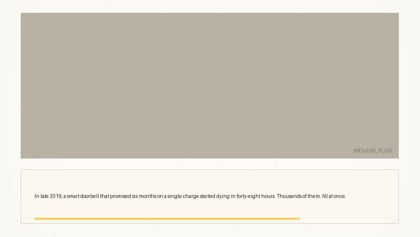
B01 · ACCUMULATE · PHOTO
· 9.5s · scene 0
In late 2019, a smart doorbell that promised six months on a single charge started dying in forty-eight hours. Thousands of them. All at once.
[PHOTO] Suburban front door in flat November light, a sleek smart video doorbell mounted beside it, indicator LED dark; set shot.focus on the doorbell
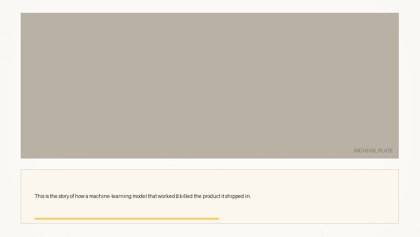
B02 · ACCUMULATE
· 5.3s · scene 0
This is the story of how a machine-learning model that worked — killed the product it shipped in.
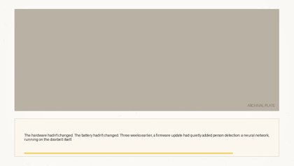
B03 · ACCUMULATE · PHOTO+ANNOTATION·ai
· 11.4s · scene 0
The hardware hadn't changed. The battery hadn't changed. Three weeks earlier, a firmware update had quietly added person detection: a neural network, running on the doorbell itself.
[PHOTO+ANNOTATION·ai] Product-teardown style plate: doorbell casing opened flat, board and battery visible. Remotion chips land on cue: 'HARDWARE — unchanged' (keyed to 'hardware'), 'BATTERY — unchanged' (keyed to 'battery'), terracotta chip 'FIRMWARE v2.1 — +person detection' (keyed to 'firmware update'). Degrades to clean plate.
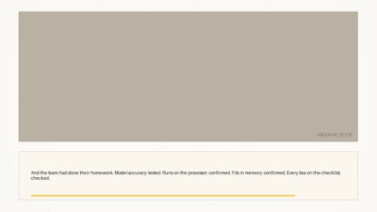
B04 · ACCUMULATE · SCAN·prop
· 11.7s · scene 0
And the team had done their homework. Model accuracy: tested. Runs on the processor: confirmed. Fits in memory: confirmed. Every box on the checklist, checked.
[SCAN·prop] Designed 'INTEGRATION TEST REPORT' prop sheet (typewriter serif on aged paper, three checklist rows + one conspicuously absent fourth row of empty space). REMOTION PLANE: golden highlighter sweeps each row keyed to 'accuracy', 'processor', 'memory'; hand-drawn tick lands after each. The empty bottom of the page is the setup for B05. Degrades to hold+slow-zoom. Regions in annotations.json.
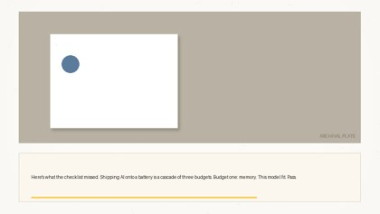
B05 · ACCUMULATE
· 9.9s · scene 0
Here's what the checklist missed. Shipping AI onto a battery is a cascade of three budgets. Budget one: memory. This model fit. Pass.
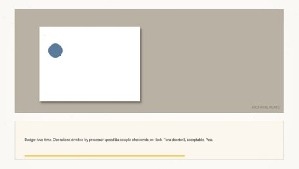
B06 · ACCUMULATE
· 9.5s · scene 0
Budget two: time. Operations divided by processor speed — a couple of seconds per look. For a doorbell, acceptable. Pass.
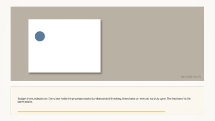
B07 · ACCUMULATE · PHOTO+ANNOTATION·ai
· 10.0s · scene 0
Budget three, nobody ran. Every look holds the processor awake — and seconds of thinking, times looks per minute, is a duty cycle. The fraction of its life spent awake.
[PHOTO+ANNOTATION·ai] Macro plate of the doorbell's circuit board, processor centered. Remotion overlay: a horizontal awake/asleep timeline strip across the lower third — terracotta AWAKE blocks against a long dusty-blue ASLEEP floor — drawing left-to-right keyed to 'seconds of thinking'; label chip 'DUTY CYCLE = awake ÷ total' lands on the spoken 'duty cycle'. Degrades to clean plate.
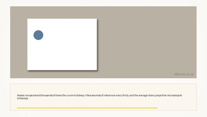
B08 · ACCUMULATE
· 9.1s · scene 0
Awake is expensive — thousands of times the current of sleep. A few seconds of inference every thirty, and the average draw jumps from microamps to milliamps.
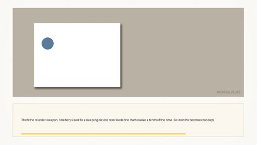
B09 · ACCUMULATE
· 8.4s · scene 0
That's the murder weapon. A battery sized for a sleeping device now feeds one that's awake a tenth of the time. Six months becomes two days.
B10 · ACCUMULATE
· 6.5s · scene 0
Twelve thousand doorbells came back in the first month. By December, the feature was rolled back. Deleted.
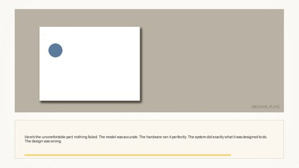
B11 · ACCUMULATE · PHOTO+ANNOTATION·ai
· 10.9s · scene 0
Here's the uncomfortable part: nothing failed. The model was accurate. The hardware ran it perfectly. The system did exactly what it was designed to do. The design was wrong.
[PHOTO+ANNOTATION·ai] The B01 doorbell again, closer, lens dark. Remotion chips land in sequence: 'MODEL — correct' (dusty blue, keyed to 'accurate'), 'HARDWARE — correct' (dusty blue, keyed to 'perfectly'), 'DESIGN — wrong' (terracotta, keyed to the final 'wrong'). Degrades to clean plate.
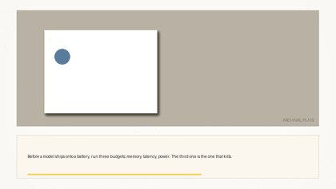
B12 · ACCUMULATE
· 7.6s · scene 0
Before a model ships onto a battery, run three budgets: memory, latency, power. The third one is the one that kills.